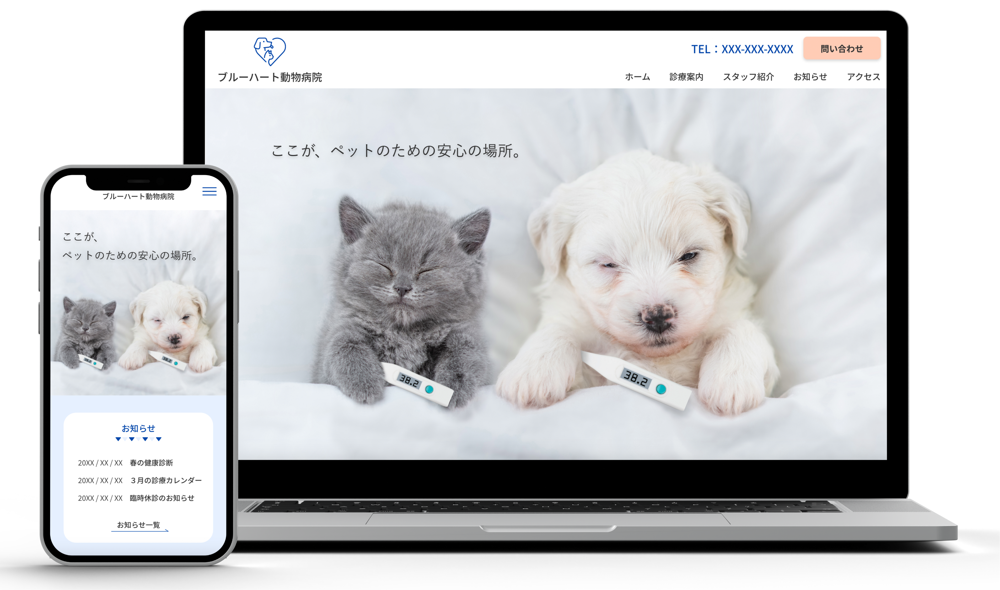
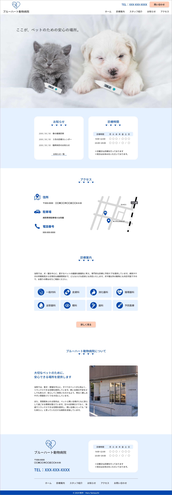
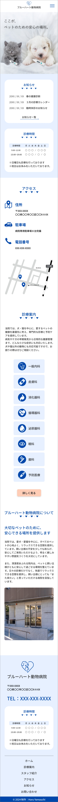

Blue Heart Animal Hospital - Website

概要
架空の動物病院のサイトを制作しました。
目的
清潔で信頼できる印象を与え、安心して来院してもらう。 必要な情報を分かりやすく整理し、スムーズにアクセスできるようにする。
ターゲット
２０代〜５０代のペットを飼っている飼い主さん、どの病院を選べばいいか迷ってる人
デザイン
親しみやすさと清潔感を大切にし、安心できるペット病院の雰囲気を伝えるデザインを心がけました。 柔らかなカラーリングと温かみのある写真を使用することで、飼い主さんが不安を感じることなくサイトを閲覧できるように工夫し ました。 また、清潔感のあるシンプルなレイアウトにし、必要な情報をわかりやすく整理することで、信頼感を持ってもらえるようにしまし た。診療案内やアクセス情報など、飼い主さんが特に知りたい内容には視認性の高いデザインを取り入れ、直感的に情報を得られる ように配慮しています。 ペットの健康を守るために、病院選びに悩む方が安心して相談できる場所を目指し、デザインを仕上げました。
制作範囲・期間
企画、ワイヤーフレーム：2日
デザイン：3日
制作ツール
Photoshop / Illustrator / XD

